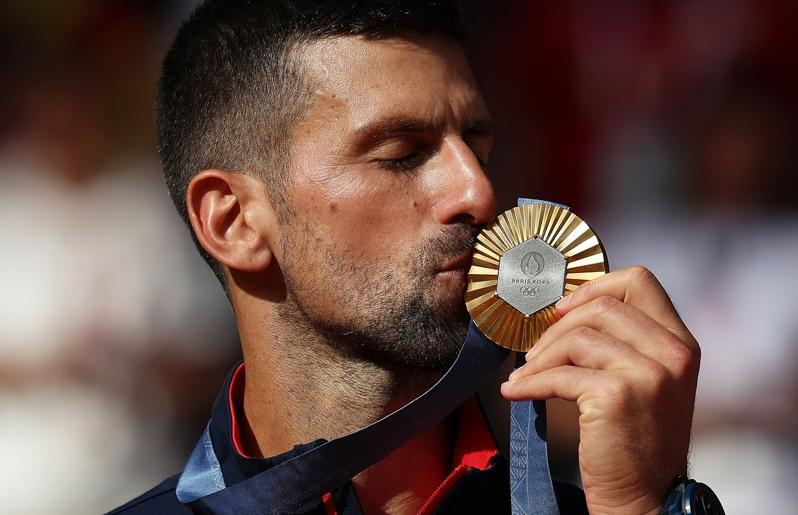

生涯独缺的奥运金牌，37岁的塞尔维亚名将约克维奇（Novak Djokovic）巴黎奥运终于如愿，名列头号种子的他金牌战历经2小时50分钟的激战，以7：6（7：3）、7：6（7：2）力退小16岁的西班牙「小蛮牛」阿尔卡拉斯（Carlos Alcaraz），达成生涯「金满贯」让他激动流下男儿泪，颁奖典礼上不断亲吻手上的金牌。
5度挑战五环圣殿，约克维奇渴望的金牌到手，让他加入「玉罗刹」葛拉芙（Steffi Graf）、美国传奇阿格西（Andre Agassi）、「西班牙蛮牛」纳达尔（Rafael Nadal）和美国女传奇小威廉丝（Serena Williams）行列，成为史上第5位完成「金满贯」选手，从所有肢体动作都可感受到他满满的喜悦。
「我对我感受到的一切有点不知所措，在场上时有上百万种不同情绪，很正向、很荣耀、很开心。」约克维奇提到，有机会争夺生涯第一面奥运金牌，也真的完成目标，「这是我生涯对我国家带来的最大成功。」
已打下24座大满贯的小约不讳言，想在个人生涯累积更多荣耀，但代表国家感受又不同，不管是台维斯杯夺冠或是奥运摘金，且37岁拿下奥运金牌是前所未见，他笑说已经准备好大肆庆祝，「我迫不及待要迎接之后的48小时。」
24座大满冠、428周世界第一都是网坛纪录，小约在巴黎集满生涯最后一块大赛拼图，他承认过去常觉得自己做得不够多，场上、场下都如此，严以律己一直是自身很大课题，如今能为塞尔维亚带回奥运金牌、完成生涯金满贯，也完成所有纪录，「我非常感激。」
约克维奇赛后更表示：「是的，我想参加2028年洛杉矶奥运，我喜欢代表我的国家参加奥运会和台维斯杯。」
巴黎奥运热话题
- 除了金银还有钻石 奥运场上的求婚名场面真不少
- 「胯下一包」卡到杆子 法选手撑竿跳失败却暴红
- 再战2028？拜尔丝：永不说不 但到时我真的老了
- 金牌内战成饭圈大战？孙颖莎满场欢呼 陈梦收获嘘声
- 4日赛程 网球男单王者诞生、樊振东力拚桌球男单金牌